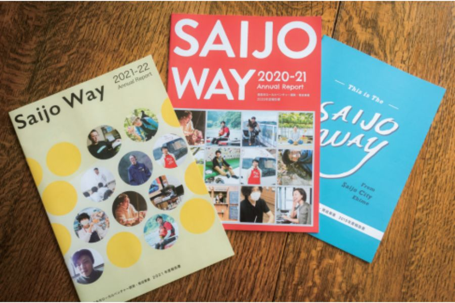
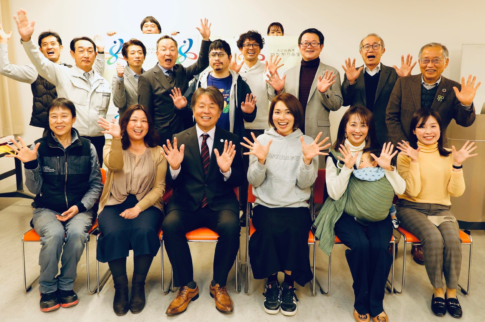
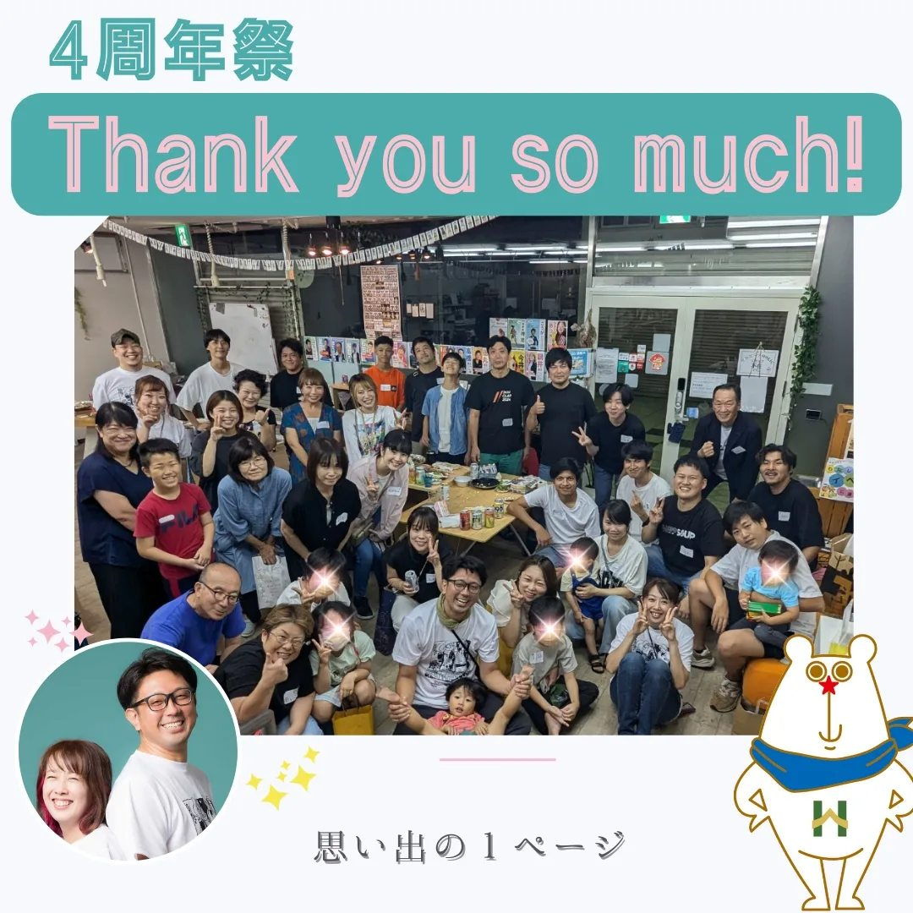
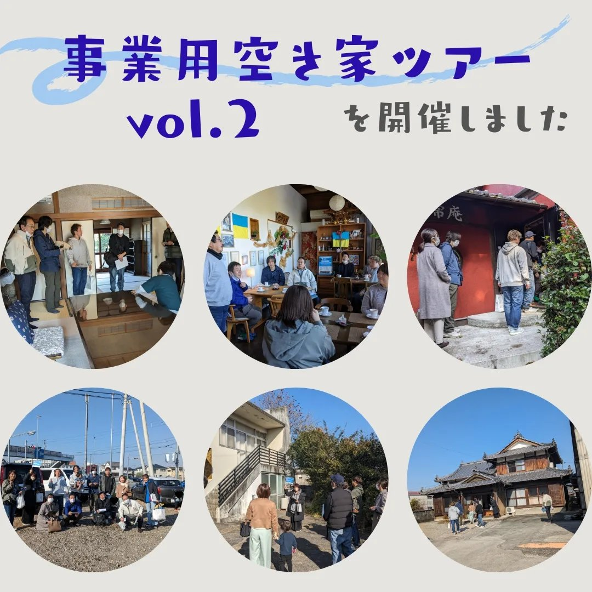

<div id="works-wrapper">
        <h2 class="section-title" style="color: var(--color-white);">WORKS</h2>
        <div class="slider-container" id="auto-slider">
            
            <div class="work-item">
                
                <strong>実績①</strong><br>ローカルベンチャー<br>誘致育成事業
                <div class="work-tooltip">西条市のローカルベンチャーを牽引！</div>
            </div>

            <div class="work-item">
                
                <strong>実績②</strong><br>四国初の<br>市民コミュニティ財団設立
                <div class="work-tooltip">資金循環の仕組みを地域に創出！</div>
            </div>

            <div class="work-item">
                
                <strong>実績③</strong><br>100人超の<br>起業家コミュニティ創造
                <div class="work-tooltip">延べ300件超の起業支援、資金調達支援額3000万円超！💥</div>
            </div>

            <div class="work-item">
                
                <strong>実績④</strong><br>事業用<br>空き家バンク設立
                <div class="work-tooltip">起業と遊休資産をマッチングで地域課題解決へ</div>
            </div>

        </div>
    </div>
